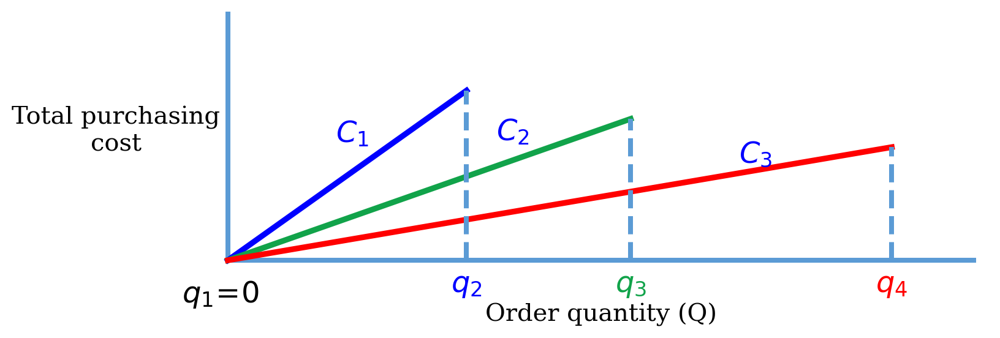
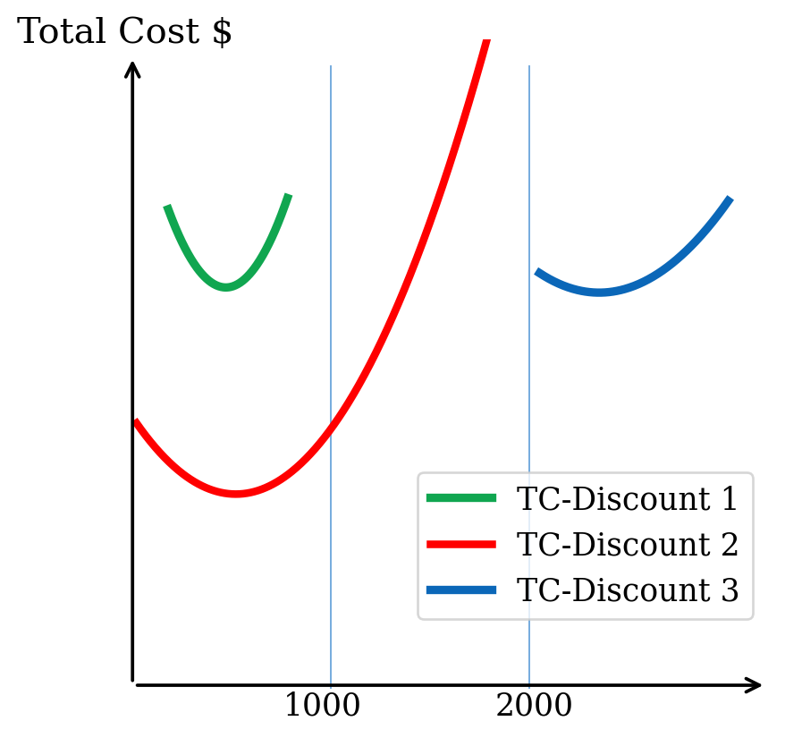
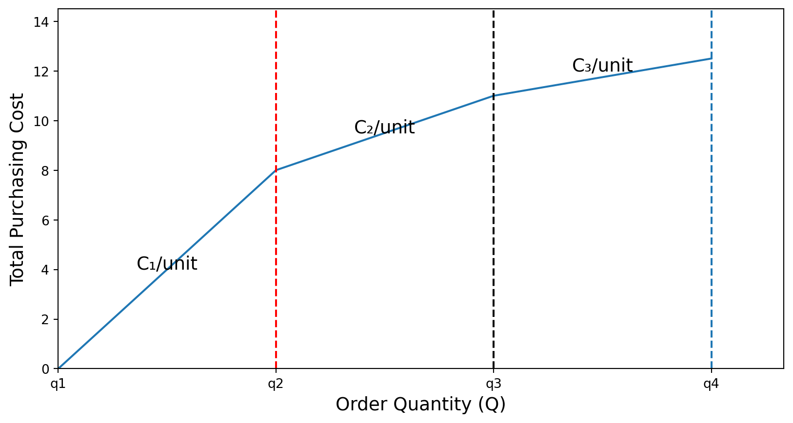
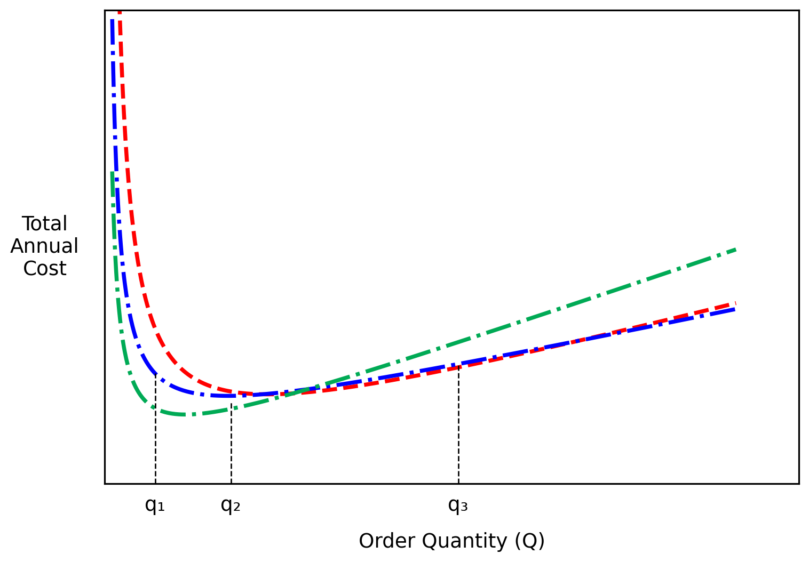
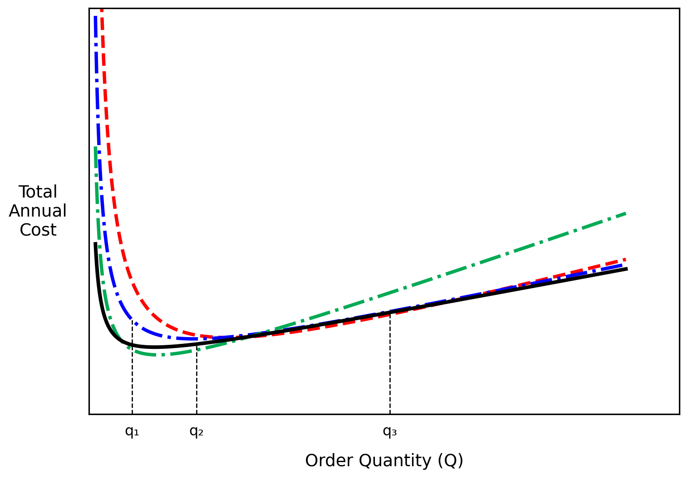
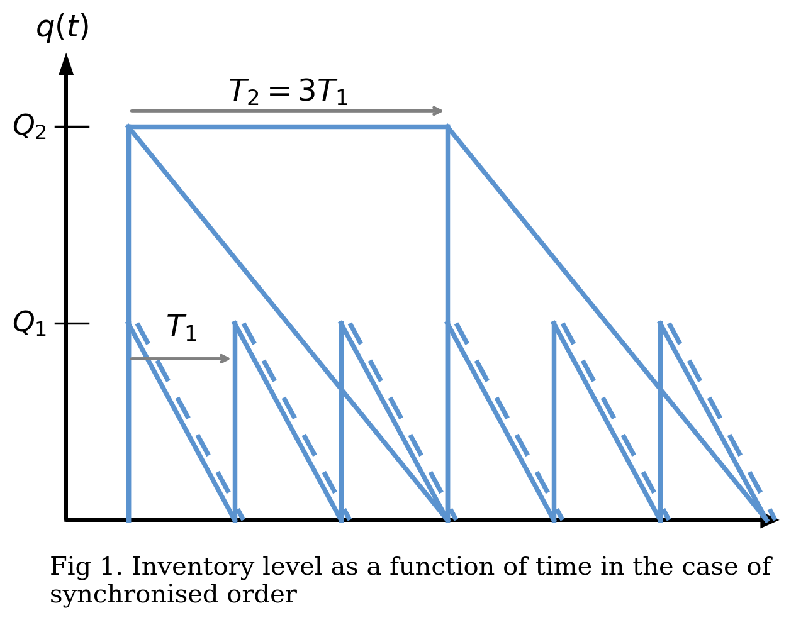

05115130 Supply Chain Modelling and Optimisation
11 Jun 2026
Inventory Model With Discount
Multicommodity Inventory Models
Important

\[ \boxed{TC_i (Q) = C_i D + \frac{D}{Q}A + \frac{Q}{2}h_i,\;\;(i=1,\,2,\,\ldots)} \]
where \(h_𝑖=IC_i, \;(i=1,2,\ldots)\;\) and \(I\) is a % of the purchase cost \(C_i\) or an internal interest rate.
For each \(C_i\), the best order quantity can be established in the following way:
If the wholesale price were \(C_i\), what would be the \(Q_𝑖^*\) ?
\(𝐐_𝒊^* < 𝒒_𝒊\): infeasible, as we have to order at least \(𝑏_𝑖\) units to qualify for the price \(C_i\) given this price, it is best to order \(𝑏_𝑖\) units
\(𝐪_𝒊 < 𝐐_𝒊^* < 𝒒_{𝒊+𝟏}\) : feasible, the optimal decision is \(𝑄_𝑖^*\)
\(𝐐_𝒊* \geq \mathbf{q_{i+1}}\) : inefficient, as we would qualify for an even lower price with this order quantity given this price, we want to order at most \(𝐪_{𝒊+𝟏}−𝟏\) units
| Discount Number | Discount Quantity | Discount | Discount Cost |
|---|---|---|---|
| 1 | 0 to 999 | 0% | $5.00 |
| 2 | 1000 to 1,999 | 4% | $4.80 |
| 3 | 2,000 and over | 5% | $4.75 |
The major trade-off when considering quantity discounts is between the reduced item cost and the increased carrying cost.
As a result, the value of \(Q^*\) will be different for each discounted price.
| Discount Number | Discount Quantity | Discount | Discount Cost |
|---|---|---|---|
| 1 | 0 to 999 | 0% | $5.00 |
| 2 | 1000 to 1,999 | 4% | $4.80 |
| 3 | 2,000 and over | 5% | $4.75 |

If \(Q^*\) for discount 2 in the QDS Table turns out to be 500 units (green TC), adjust this value up to 1,000 units to get 4% discount (red TC).
\[ \boxed{TC_i(Q) = C_𝑖 D +\frac{DA}{Q} + \frac{Q}{2} h_i}, \]
\[ \quad 𝑞_𝑖 \leq 𝑄 \leq 𝑞_{𝑖+1} \]
\(Q^*\) can be found by the following procedure:
\[ \hat{Q}_i =\left\{ \begin{array} bb_i & \text{if } Q_i^* < q_i\\ Q_i^* & \text{if } q_i \leq Q_i^* \leq q_{i+1} \\ q_{i+1}-1 & \text{if } Q_i^* > q_{i+1} \end{array} \right. \]
\[ Q^* = \hat{Q}_i^*| _{TC(\hat{Q}_i^*)}\quad \text{where} \,\, TC(\hat{Q}_i^*) = \min_{i=1,2,\ldots} \{TC(\hat{Q}_i)\} \]
Example 1. Given the following quantity discount schedule table, determine the number of discount level \(𝑚\), discount break \(𝑞_𝑖\) and the corresponding cost \(𝐶_𝑖\).
| Discount Number | Discount Quantity | Per-Unit Price |
|---|---|---|
| 1 | 0 to 100 | $5.00 |
| 2 | 101 to 250 | $4.50 |
| 3 | 251 and over | $4.00 |
Let \(m\) be the number of discount possibilities.
In the example in the Table, there are three discount levels, so \(m = 3\).
From Table,
\(q_1=0,\quad q_2=101,\quad q_3=251\)
\(C_1=\$5,\quad C_2=\$4.50,\quad C_3=\$4.\)
Step 1: Set \(j = m\). Compute \(Q_m^* = \sqrt{\frac{2DA}{I \times C_m}}\)
Step 2: Is \(Q_m^* \geq q_m\)?
Step 3: Set \(j = j−1\). Compute the optimal EOQ for the \(j\)th cost curve: \(Q_j^* = \sqrt{\frac{2DA}{I \times C_j}}\)
Step 4: Is \(Q_j^*\) in \([q_j,\,q_{j+1})\)?
Example 2
An office supplies store sees a uniform demand rate of 10 boxes of pencils per week. Each box costs $5. If the fixed cost of placing an order is $10 and the holding cost rate is 20% per year.
Suppose that the retailer gets an all-units discount of 5% per box of pencils if he purchases at least 110 pencil boxes in a single order.
The deal is further sweetened if the retailer purchases at least 150 boxes in which case he gets a 10% discount. Determine the optimal order quantity using the EOQ model.
Should the retailer change the order quantity?
\[ \begin{aligned} & A=10,\quad I=0.20,\quad C=5,\quad D =(10)(52) = 520. \\ \\ & C_1=5,\quad C_2=5(1−0.05)=4.75,\quad C_3=5(1−0.1)=4.50,\\ \\ & q_1=0,\quad q_2=110,\quad \text{and} \quad q_3=150. \end{aligned} \]
Iteration 1: Initialise \(j=3\)
Step 1: We compute \(\displaystyle Q_3^* = \sqrt{\frac{2DA}{IC_i}} = \sqrt{\frac{2(520)(10)}{(0.2)(4.50)}}\approx 107.5\)
Step 2: Since \(Q_3^*\) is not greater than \(q_3=150\), the min cost occuring at \(Q=150\) is
\[ TC_\text{min}\!=\!C_3D\!+\!\frac{D}{Q}A\!+\!\frac{Q}{2}(IC_3)\!=\!(4.50)(520)\!+\!\frac{520(10)}{150}\!+\!\frac{(150)(0.2)(4.50)}{2}\!\approx\!2442.17 \]
Step 3: Now, we set \(j=2\). We compute \(\displaystyle Q_2^*=\sqrt{\frac{2(10)(520)}{(0.2)(4.75)}}\approx 104.63\)
Step 4: Once again, \(Q_2^*\approx 104.63 \notin [110, 150]\quad\) is not feasible. The minimum feasible cost thus occurs at \(Q=q_2=110\) and is equal to
\[ \begin{aligned} TC(q_2)&=C_2d + \frac{D}{Q}A+\frac{Q}{2}(I \times C_2)\\ &=(4.75)(520)+\frac{520}{110}10+\frac{110}{2}(0.2)(4.75) \approx 2569.52 > TC_{min} \end{aligned} \]
Iteration 2:
Step 3: we set \(j=1\) and compute \(\displaystyle Q_1^*=\sqrt{\frac{2(10)(520)}{(0.2)(5.00)}}\approx 101.98\)
Step 4: \(Q_1^* \in [0, 110)\quad\) is feasible. The corresponding cost is equal to $2701.98, which is higher than \(TC_{min}\)
Thus, the optimal solution is to order 150 units and the corresponding average annual cost of purchasing and managing inventory is equal to $2442.17.
Observe that the algorithm stops as soon as we find a discount for which \(Q_j^*\) is feasible.
In the incremental quantity discount, as the quantity per order increases,
the unit purchasing cost declines incrementally on additional units purchased as opposed to on all the units purchased.
Assumed that the units are discrete, and the units are infinitely divisible and the purchasing quantity is any real value.
Let \(q_1 = 0,\, q_2,\, q_3,\,\ldots,\, q_j,\, q_{j+1},\ldots, q_m \quad\) be the order quantities at which the unit purchasing cost changes. The number of discount levels is \(m\).
The unit purchasing cost is the same for all values of \(Q \in [q_j, q_{j+1})\), and we denote this cost by \(C_j\).
Example 3. Let’s say a supplier offers the following incremental discount structure:
| Quantity range (units) | Price per unit |
|---|---|
| 0 - 99 | $10 |
| 100 - 499 | $9 |
| 500+ | $8 |
import matplotlib.pyplot as plt
# Define key quantity breakpoints
q1, q2, q3, q4 = 0, 3, 6, 9
# Define piecewise cost curve (example values to match shape)
x = [0, q2, q3, q4]
y = [0, 8, 11, 12.5] # increasing with decreasing slope
# Plot the main curve
plt.plot(x, y)
# Vertical dashed lines
plt.axvline(x=q2, linestyle='--', color='red')
plt.axvline(x=q3, linestyle='--', color='black')
plt.axvline(x=q4, linestyle='--')
# Labels for cost per unit regions
plt.text(q2/2, 4, "C₁/unit", ha='center', fontsize=14)
plt.text((q2+q3)/2, 9.5, "C₂/unit", ha='center', fontsize=14)
plt.text((q3+q4)/2, 12, "C₃/unit", ha='center', fontsize=14)
# Axis labels
plt.xlabel("Order Quantity (Q)", fontsize=14)
plt.ylabel("Total Purchasing Cost", fontsize=14)
# Ticks at q1, q2, q3, q4
plt.xticks([q1, q2, q3, q4], ['q1', 'q2', 'q3', 'q4'])
# Clean up appearance
plt.xlim(0, q4 + 1)
plt.ylim(0, max(y) + 2)
plt.show()
The unit purchasing price is $1.00 for every unit up to 200 units. If the order quantity is between 201 and 500, the unit purchasing price drops to $0.98 but only for units numbered 201 through 500.
The total purchasing cost of 300 units will be (200)(1)+(300−200)(0.98) = $298.
Similarly, if at least 501 units are purchased, the unit purchasing price decreases to $0.95 for units numbered 501, 502, etc.
\[ m=3,\, q_1=0,\, q_2 =201,\, q_3 =501,\, C_1 = $1,\, C_2= $0.98,\,C_3 = $0.95 \]
\[ \begin{aligned} C(Q)&=C_1(q_2-q_1)+C_2(q_3-q_2)+\ldots+C_{j-1}(q_j-q_{j-1})+C_j(Q-q_j)\\ &=R_j +C_j(Q-q_j). \end{aligned} \]
\(\qquad\text{where} \quad R_j= C_1(q_2-q_1)+C_2(q_3-q_2)+\ldots+C_{j-1}(q_j-q_{j-1})\)
\[ \frac{C(Q)}{Q} = \frac{R_j}{Q}+C_j-C_j\frac{q_j}{Q}. \]
The average annual purchasing cost when each order consists of \(Q\) units is equal to \(\displaystyle \frac{C(Q)}{Q}d\).
The fixed order cost remains similar to those in the basic EOQ model, except that the average annual holding cost per unit is now equal to \(\displaystyle I \times \frac{C(Q)}{Q}\)
The average annual cost of managing inventory is thus equal to
\[ TC(Q) = \frac{C(Q)}{Q}d+\frac{D}{Q}A+\frac{Q}{2}(I\times \frac{C(Q)}{Q}) \]
\[ TC(Q) = C_jD + (R_j-C_jq_j+A)\frac{D}{Q}+\frac{Q}{2}IC_j+\frac{I(R_j-C_jq_j)}{2}. \]
import numpy as np
import matplotlib.pyplot as plt
# ----- Data -----
Q = np.linspace(0.12, 10, 800)
# Curves chosen to match the shape in the figure
y_red = 2.8 / Q + 0.42 * Q + 0.1 #1.2
y_blue = 1.3 / Q + 0.34 * Q + 0.9
y_green = 0.9 / Q + 0.55 * Q + 0.35
y_black = 0.45 / Q + 0.30 * Q + 1.25 #0.95
q1, q2, q3 = 0.8, 2.0, 5.6
# ----- Plot -----
fig, ax = plt.subplots(figsize=(8, 5.6))
ax.plot(Q, y_red, 'r--', lw=2.8)
ax.plot(Q, y_blue, 'b-.', lw=2.8)
ax.plot(Q, y_green, color='#00aa55', linestyle='-.', lw=2.8)
# ax.plot(Q, y_black, 'k-', lw=3.0)
# Vertical dashed markers
ax.vlines(q1, ymin=0, ymax=np.interp(q1, Q, y_blue), colors='k', linestyles='--', lw=1)
ax.vlines(q2, ymin=0, ymax=np.interp(q2, Q, y_black), colors='k', linestyles='--', lw=1)
ax.vlines(q3, ymin=0, ymax=np.interp(q3, Q, y_black), colors='k', linestyles='--', lw=1)
# Axes limits and labels
ax.set_xlim(0, 11)
ax.set_ylim(0, 12)
ax.set_xlabel('Order Quantity (Q)', fontsize=14, labelpad=12)
ax.set_ylabel('Total\nAnnual\nCost', fontsize=14, rotation=0, labelpad=42, va='center')
# Custom x-ticks
ax.set_xticks([q1, q2, q3])
ax.set_xticklabels(['q₁', 'q₂', 'q₃'], fontsize=14)
# Remove y-ticks to match the figure style
ax.set_yticks([])
# Style the frame
for spine in ax.spines.values():
spine.set_linewidth(1.2)
ax.tick_params(axis='x', length=0, pad=8)
ax.tick_params(axis='y', length=0)
plt.tight_layout()
plt.show()
import numpy as np
import matplotlib.pyplot as plt
# ----- Data -----
Q = np.linspace(0.12, 10, 800)
# Curves chosen to match the shape in the figure
y_red = 2.8 / Q + 0.42 * Q + 0.1 #1.2
y_blue = 1.3 / Q + 0.34 * Q + 0.9
y_green = 0.9 / Q + 0.55 * Q + 0.35
y_black = 0.45 / Q + 0.30 * Q + 1.25 #0.95
q1, q2, q3 = 0.8, 2.0, 5.6
# ----- Plot -----
fig, ax = plt.subplots(figsize=(8, 5.6))
ax.plot(Q, y_red, 'r--', lw=2.8)
ax.plot(Q, y_blue, 'b-.', lw=2.8)
ax.plot(Q, y_green, color='#00aa55', linestyle='-.', lw=2.8)
ax.plot(Q, y_black, 'k-', lw=3.0)
# Vertical dashed markers
ax.vlines(q1, ymin=0, ymax=np.interp(q1, Q, y_blue), colors='k', linestyles='--', lw=1)
ax.vlines(q2, ymin=0, ymax=np.interp(q2, Q, y_black), colors='k', linestyles='--', lw=1)
ax.vlines(q3, ymin=0, ymax=np.interp(q3, Q, y_black), colors='k', linestyles='--', lw=1)
# Axes limits and labels
ax.set_xlim(0, 11)
ax.set_ylim(0, 12)
ax.set_xlabel('Order Quantity (Q)', fontsize=14, labelpad=12)
ax.set_ylabel('Total\nAnnual\nCost', fontsize=14, rotation=0, labelpad=42, va='center')
# Custom x-ticks
ax.set_xticks([q1, q2, q3])
ax.set_xticklabels(['q₁', 'q₂', 'q₃'], fontsize=12)
# Remove y-ticks to match the figure style
ax.set_yticks([])
# Style the frame
for spine in ax.spines.values():
spine.set_linewidth(1.2)
ax.tick_params(axis='x', length=0, pad=8)
ax.tick_params(axis='y', length=0)
plt.tight_layout()
plt.show()
\[ \begin{aligned} & \frac{d}{dQ}TC_j(Q)=-(R_j-C_jq_j+A)\frac{D}{Q^2}+\frac{IC_j}{2}=0\\ & Q_j^* = \sqrt{\frac{2(R_j-C_jq_j+A)d}{IC_j}}. \end{aligned} \]
This step gives us a total of m possible order quantities.
Step 2. Check which one of these potential values for \(Q^∗\) is feasible, that is, \(q_j \leq Q_j^* \leq q_{j+1}.\) Disregard the ones that do not satisfy this inequality.
Step 3. Calculate the cost \(TC_j(Q_j^*\) corresponding to each remaining \(Q_j^*\). The order quantity \(Q_j^*\) that produces the least cost is the optimal order quantity.
From the preceding example, the retailer is offered an incremental quantity discount. Let us determine the optimal order quantity.
Step 1. \(R_1=0, R_2=C_1(q_2-q_1)=5(110-0)=550\quad\) and \(\qquad \qquad R_3=R_2+C_2(q_3-q_2) = 550+4.75(150-110)=740.\)
\[ Q_1^*=\sqrt{\frac{2(R_1-C_1q_1+K)d}{IC_1}}=\sqrt{\frac{2(0-0+10)(520)}{(0.2)(5)}} \approx 101.98 \]
\[ Q_2^*=\sqrt{\frac{2(R_2-C_2q_2+K)d}{IC_2}}=\sqrt{\frac{2(550-(4.75)(110))+10)(520)}{(0.2)(4.75)}} \approx 202.61\\ \]
\[ Q_3^*=\sqrt{\frac{2(R_3-C_3q_3+K)d}{IC_3}}=\sqrt{\frac{2(740-(4.5)(150))+10)(520)}{(0.2)(4.5)}} \approx 294.39\\ \]
Step 2. We disregard \(Q_2^*\) since it does not line in [110, 150). \(Q_1*\) and \(Q_3^*\) are feasible.
Step 3. We compute the cost corresponding to \(Q_1^*\) and \(Q_3^*\):
\[ \begin{aligned} TC(Q_1^*) & =(5)(520) + (0-0+10)\frac{520}{101.98}+\frac{(0.2)(5)(101.98)}{2}\\ & \quad +\frac{(0.2)(0-0)}{2} \approx 2701.98 \end{aligned} \]
\[ \begin{aligned} TC(Q_3^*) & =(4.5)(520) + (740-(4.5)(150))+10)\frac{520}{294.39}\\ & \quad +\frac{(0.2)(4.5)(294.39)}{2}+\frac{(0.2)(740-(4.5)(150))}{2} \\ & \approx 2611.45 \end{aligned} \]
Delivered independently for each product
Delivered jointly for all products
Delivered jointly for a selected subset of the products
Goal: To combining the demand for several different items into one joint order rather than ordering each product separately.
By grouping products together:
Fixed ordering costs (e.g., administrative, shipping setup) are shared across items;
Transportation and handling become more efficient;
Coordination across products improves, especially when items come from the same supplier.
This approach is commonly used in inventory and SC management to reduce ordering costs, take advantage of economies of scale, and simplify logistics.
Demand for the Deskpro computer at Best Buy is 1,000 units per month. Best Buy incurs a fixed order placement, transportation, and receiving cost of $4,000 each time an order is placed. Each computer costs Best Buy $500 and the retailer has a holding cost of 20%. Evaluate the number of computers that the store manager should order in each replenishment lot.
\[ \text{Order cost per lot}\,\, A=\$4000;\quad \text{Unit cost}\,\, C=\$500;\quad I = 0.20\]
Annual demand \(D = 1000 \times 12 =12000\)
Annual holding cost per unit \(h = I \times C = 0.2 \times 500 = 100\)
\[ Q^*=\sqrt{\frac{2DA}{IC}}=\sqrt{\frac{(2)(12000)(4000)}{(0.2)(500)}}\approx 979.8\]
\[ (980 \times 4) / 2 = 1960 \,\,\text{units} \]
This action significantly reduces the cycle inventory as well as cost to Best Buy.
Goal: To determining optimal order quantities when several different items are replenished together, often from the same supplier or through a shared ordering process.
Instead of calculating an independent order size for each product (like basic EOQ), this approach:
Example. Best Buy sells three models of computers, the Litepro, the Medpro, and the Heavypro. Annual demands for the three products are \(D_L = 12,000\) for the Litepro, \(D_M = 1,200\) units for the Medpro, and \(D_H = 120\) units for the Heavypro. Each model costs Best Buy $500. A fixed transportation cost of $4,000 is incurred each time an order is delivered. For each model ordered and delivered on the same truck, an additional fixed cost of $1,000 is incurred for receiving and storage. Best Buy incurs a holding cost of 20 percent. Evaluate the lot sizes that the Best Buy manager should order if lots for each product are ordered and delivered independently. Also evaluate the annual cost of such a policy.
| Metric | Formula | Litepro | Medpro | Heavy pro |
|---|---|---|---|---|
| Demand per year | \(D\) | 12,000 | 1,200 | 120 |
| Fixed cost/order | \(A\) | $5,000 | $5,000 | $5,000 |
| Optimal order size | \(Q^* = \sqrt{\frac{2DA}{h}}\) | 1,095 | 346 | 110 |
| Cycle inventory | \(\frac{Q^*}{2}\) | 548 | 173 | 55 |
| Order frequency | \(\frac{D}{Q^*}\) | 11.0/year | 3.5/year | 1.1/year |
| Average flow time | \(\frac{Q^*}{2D}\) | 2.4 weeks | 7.5 weeks | 23.7 weeks |
| Annual ordering cost | \(\frac{D}{Q^*} \times A\) | $54,772 | $17,321 | $5,477 |
| Annual holding cost | \(\frac{Q^*}{2} \times h\) | $54,772 | $17,321 | $5,477 |
| Annual cost | Holding + Ordering Cost | $109,544 | $34,642 | $10,954 |
| Metric | Litepro | Medpro | Heavy pro |
|---|---|---|---|
| Demand per year | 12,000 | 1,200 | 120 |
| Fixed cost/order | $5,000 | $5,000 | $5,000 |
| Optimal order size | 1,095 | 346 | 110 |
| Cycle inventory | 548 | 173 | 55 |
| Order frequency | 11.0/year | 3.5/year | 1.1/year |
| Average flow time | 2.4 weeks | 7.5 weeks | 23.7 weeks |
| Annual holding cost | $54,772 | $17,321 | $5,477 |
| Annual ordering cost | $54,772 | $17,321 | $5,477 |
| Annual cost | $109,544 | $34,642 | $10,954 |
\[ A^* = A + A_L + A_M + A_H \]
\[ \text{Annual order cost }= nA^* \]
\[ \text{Lot size of each model }i =\frac{D_i}{n} \]
\[ \text{Annual holding cost }=\frac{D_L I C_L}{2n}+\frac{D_M I C_M}{2n}+\frac{D_H I C_H}{2n} \]
\[ \text{Total Annual cost }TC(n)=nA^*+\frac{D_L I C_L}{2n}+\frac{D_M I C_M}{2n}+\frac{D_H I C_H}{2n} \]
\[ n^* = \sqrt{\frac{D_LIC_L + D_MIC_M+D_HIC_H}{2A^*}}.\]
\[ n^* = \sqrt{\frac{\sum_{i=1}^k D_i I C_i}{2A^*}}\qquad (*)\]
Products Ordered and Delivered Jointly Consider the Best Buy data in previous Example. The three product managers have decided to aggregate and order all three models each time they place an order. Evaluate the optimal lot size for each model.
\[ A^* = A + A_L + A_M + A_H = 4000 + 1000 + 1000 + 1000 = \$7000\]
\[ n^*=\sqrt{\frac{(12000)(100)+(1200)(100)+(120)(100)}{(2)(7000)}}=9.75\]
| Metric | Litepro | Medpro | Heavypro |
|---|---|---|---|
| Demand per year, \(D\) | 12,000 | 1,200 | 120 |
| Order frequency per year, \(n^*\) | 9.75 | 9.75 | 9.75 |
| Optimal order size, \(D/n^*\) | 1,230 | 123 | 12.3 |
| Cycle inventory, \(\bar{q}=D/(2n^*)\) | 615 | 61.5 | 6.15 |
| Annual holding cost, \(\bar{q}\times h\) | $61,512 | $6,151 | $615 |
| Average flow time (weeks), \(\bar{q}\times 52/D\) | 2.67 | 2.67 | 2.67 |
Annual order cost = \(9.75 \times 7,000=\$68,250\)
Total cost = Annual order cost + Annual holding cost across three models
\[ TC = \$68,250 + (\$61,512 + \$6,151 + \$615) =\$136,528 \]
W.W. Grainger sources from hundreds of suppliers and is considering the aggregation of inbound shipments to lower costs. Truckload shipping costs $500 per truck along with $100 per pickup. Average annual demand from each supplier is 10,000 units. Each unit costs $50 and Grainger incurs a holding cost of 20 percent.
What is the optimal order frequency and order size if Grainger decides to aggregate four suppliers per truck?
What is the optimal order size and frequency if each truck has a capacity of 2,500 units?
\[ n^*=\sqrt{\frac{\sum_{i=1}^4 D_iIC_i}{2A^*}} = \sqrt{\frac{(4 \times 10000)(0.2)(50)}{(2)(900)}} \approx 14.91 \]
\[ \text{Annual order cost} = 14.91 \times \frac{900}{4}=\$3,354 \]
\[ = \frac{10,000}{14.91}\approx 671\,\,\text{units per order} \]
\[ = IC_i\frac{Q}{2}=0.2 \times 50 \times \frac{671}{2} \approx \$3,355. \]
This policy, however, requires a total capacity per truck of \(4 \times 671 = 2,684\quad\) units.
Given a truck capacity of 2,500 units, the order frequency must be increased to ensure that the order quantity from each supplier is \(\displaystyle \frac{2500}{4} = 625\).
Thus, W.W. Grainger should increase the order frequency to \(\displaystyle \frac{10,000}{625} = 16\).
Instead of ordering every product together or independently, a subset of products, typically those with similar demand patterns, suppliers, or logistics requirements, is replenished jointly.
\[ \overline{n}_i = \sqrt{\frac{IC_iD_i}{2(A+A_i)}} \]
Hence, \[ \overline{n}=\max \{\overline{n}_i\}\quad \text{and}\quad \overline{\overline{n}}_i = \sqrt{\frac{IC_iD_i}{2 A_i}} \]
\[ m_i = \lceil \overline{m}_i \rceil \qquad \text{where} \quad \overline{m}_i=\overline{n}/\overline{\overline{n}}_i \]
\[ n = \sqrt{\frac{\sum IC_i m_i D_i}{2[A+\sum (A_i/m_i)]}}\qquad (**) \]
\[ n_i = \frac{n}{m_i} \]
where
\[ n = \sqrt{\frac{\sum IC_i m_i D_i}{2[A+\sum (A_i/m_i)]}}\qquad \leftarrow\text{Step 3}\]
\[ m_i = \lceil \overline{m}_i \rceil \qquad \qquad \leftarrow\text{Step 2}\]
\[ TC = An + \sum_i A_in_i + \sum_i \frac{IC_iD_i}{2n_i} \]
\[ TC = An + \sum_i A_i\frac{n}{m_i} + \sum_i \frac{IC_iD_im_i}{2n} \]
or equivalently,
\[ TC = n \left[A + \sum_i \frac{A_i}{m_i}\right] + \frac{1}{2n}\sum_i IC_iD_im_i \]
Consider the BestBuy data. Product managers have decided to order jointly, but to be selective about which models they include in each order. Evaluate the ordering policy and costs using the procedure discussed previously.
\[ \begin{aligned} \overline{n}_L &= \sqrt{\frac{IC_LD_L}{2(A+A_L)}} = \sqrt{\frac{(0.2)(500)(12000)}{(2)(4000 + 1000)}} \approx 11\\ \overline{n}_M &= \sqrt{\frac{IC_MD_M}{2(A+A_M)}} = \sqrt{\frac{(0.2)(500)(1200)}{(2)(4000 + 1000)}} \approx 3.5\\ \overline{n}_H &= \sqrt{\frac{IC_HD_H}{2(A+A_H)}} = \sqrt{\frac{(0.2)(500)(120)}{(2)(4000 + 1000)}} \approx 1.1\\ \end{aligned}\]
\[ \overline{n}=\max\{\overline{n}_L,\overline{n}_M,\overline{n}_H\}=11.\]
Using \(\displaystyle \overline{\overline{n}}_i = \sqrt{\frac{IC_iD_i}{2 A_i}}\), we first obtain
\(\overline{\overline{n}}_M = \sqrt{\dfrac{IC_MD_M}{2A_M}}=\sqrt{\dfrac{(0.2)(500)(1200)}{(2)(1000)}}\approx 7.7\)
\(\overline{\overline{n}}_H = \sqrt{\dfrac{IC_HD_H}{2A_H}}=\sqrt{\dfrac{(0.2)(500)(120)}{(2)(1000)}}\approx 2.4\)
Next using \(\overline{m}_i = \overline{n}/\overline{\overline{n}}_i\) and \(\overline{n}=11\), we evaluate
Thus,
\(m_M =2\) means that Medpro is included in every other order
\(m_H=5\) means that Heavypro is included in every fifth order
Litepro, the most frequently ordered model, is included in every order.
Apply Step 3 to recalculate the ordering frequency of the most frequently ordered model as \(n = 11.47\)
Thus, the Litepro is ordered 11.47 times per year.
Next we apply Step 4 to obtain an ordering frequency per year for each product:
| Metric | Litepro | Medpro | Heavypro |
|---|---|---|---|
| Demand per year (\(D_i\)) | 12,000 | 1,200 | 120 |
| Order frequency per year (\(n_i\)) | 11.47 | 5.74 | 2.29 |
| Order size (\(D/n_i\)) | 1,046 | 209 | 52 |
| Cycle inventory (\(\bar{q}=D_i/(2n_i)\)) | 523 | 104.5 | 26 |
| Annual holding cost (\(IC_i\bar{q}\)) | $52,307 | $10,461 | $2,615 |
| Average flow time (weeks) (\(\bar{q}\times 52/D\)) | 2.27 | 4.53 | 11.35 |
The annual holding cost of this policy is $65,383.00.
As \(A_L=A_M=A_H=1000,\quad\) the annual order cost is given by
\[ =11.47(4000) + 1000 (11.47 +5.74 + 2.29) =\$65,380.00 \]
When several commodities are kept in stock, their inventory policies are intertwined because of common constraints and joint costs, as we now discuss in two separate cases.
In the first case, a limit is placed on the total investment in inventories, or on the warehouse space.
In the second case, commodities share joint ordering costs.
For the sake of simplicity, both analyses will be performed under the EOQ model hypotheses
\[ \begin{aligned} \text{minimise}\quad TC(Q_1,Q_2,\ldots,Q_n) & \hspace{6em}(1) \\ \text{subject to} \quad g(Q_1,\ldots,Q_n) \leq b, & \hspace{6em}(2)\\ Q_1,\ldots,Q_n \geq 0. & \hspace{6em}(3) \end{aligned} \]
The objective function (1) is the total average cost per time unit.
\(TC(Q_1,Q_2,\ldots,Q_n) = \sum_{j=1}^n TC_j(Q_j),\)
\(TC_j(Q_j) = \frac{D_j}{Q_j}A_j+ C_jD_j +\frac{Q_j}{2}h_j,\quad j=1,\ldots,n\)
Equation (2): \(g(Q_1,\ldots,Q_n) \leq b\) is referred to as a capacity constraint representing both a budget constraint or a warehouse constraint.
It can usually be considered as linear,
\(\displaystyle \sum_{j=1}^n a_j Q_j \leq b,\hspace{6em}(4)\)
As a result, problem (1)-(3) has to be solved through iterative methods for NLP problems, such as the conjugate gradient method.
Alternatively, the following simple heuristic can be used if the capacity constraint is linear and the interest rates are identical for all the commodities:
\[ Q_j = \sqrt{\frac{2 D_j A_j}{I \times C_j}} \quad j=1,\ldots,n\hspace{3em}(5) \]
\[ Q_j(\delta) = \sqrt{\frac{2D_jA_j}{(I + \delta) C_j}}\quad j=1,\ldots,n \hspace{3em}(6) \]
\[ \sum_{j=1}^n a_jQ_j(\delta^*) = b \]
\[ \therefore \quad \delta^* = \left(\frac{1}{b} \sum_{j=1}^n a_j \sqrt{\frac{2D_jA_j}{C_j}} \right)^2 - I\hspace{3em}(7) \]
\[ \hat{Q}_j,\;\,j=1,\dots,n \]
New Frontier distributes knapsacks and suitcases in most US states. Its most successful models are the Preppie knapsack and the Yuppie suitcase. The Preppie knapsack has a yearly demand of 150,000 units, a value of $30 and a yearly holding cost equal to 20% of its value. The Yuppie suitcase has a yearly demand of 100,000 units, a value of $45 and a yearly holding cost equal to 20% of its value. In both cases, placing an order costs $250. The company’s management requires that the average capital invested in inventories does not exceed $75,000. This condition can be expressed by the following constraint,
\[ 30\frac{Q_1}{2}+45\frac{Q_2}{2}\leq 75000,\]
where it is assumed, as a precaution, that the average inventory level is the sum of the average inventory levels of the two items.
\[ \begin{aligned} Q_1' &= \sqrt{\frac{(2)(250)(150000)}{(0.2)(30)}}=3535.53\quad\text{units} \\ Q_2' &= \sqrt{\frac{(2)(250)(100000)}{(0.2)(45)}}=2357.02\quad\text{units}\\ & \text{do not satisfy the budget constraint} \end{aligned} \]
Applying the conjugated gradient method starting from the initial values \((Q_1,\, Q_2)=(1,1),\)
The following solution is obtained after 300 iterations,
\[ \hat{Q}_1 = 2500\quad\text{units}\quad \hat{Q}_2 = 1666.66\quad \text{units} \]
whose total cost is $9,045,000.
from scipy.optimize import minimize
# Data
D1, D2 = 150000, 100000 # annual demand
v1, v2 = 30, 45 # unit value
i = 0.20 # holding cost rate
K1 = K2 = 250 # ordering cost
budget = 75000
h1 = i * v1 # annual holding cost per unit
h2 = i * v2
# Total annual cost
def total_cost(x):
Q1, Q2 = x
if Q1 <= 0 or Q2 <= 0:
return float("inf")
purchase_cost = D1 * v1 + D2 * v2
ordering_cost = K1 * D1 / Q1 + K2 * D2 / Q2
holding_cost = h1 * Q1 / 2 + h2 * Q2 / 2
return purchase_cost + ordering_cost + holding_cost
# Constraint:
# 30*Q1/2 + 45*Q2/2 <= 75000
# scipy wants g(x) >= 0
def constraint_budget(x):
Q1, Q2 = x
return budget - (v1 * Q1 / 2 + v2 * Q2 / 2)
x0 = [2000, 1500]
bounds = [(1e-8, None), (1e-8, None)]
constraints = [{"type": "ineq", "fun": constraint_budget}]
result = minimize(
total_cost,
x0=x0,
method="SLSQP",
bounds=bounds,
constraints=constraints
)
Q1_opt, Q2_opt = result.x
print(f"Optimal Q1 = {Q1_opt:.2f}")
print(f"Optimal Q2 = {Q2_opt:.2f}")
print(f"Minimum total cost = ${result.fun:,.2f}")
print(f"Budget used = ${v1 * Q1_opt / 2 + v2 * Q2_opt / 2:,.2f}")
print(f"Success = {result.success}")
print(result.message)Optimal Q1 = 2500.61
Optimal Q2 = 1666.26
Minimum total cost = $9,045,000.00
Budget used = $75,000.00
Success = True
Optimization terminated successfully\[ \delta^* =\left[\frac{1}{75000}\left( \frac{30}{2}\sqrt{\frac{(2)(250)(150000)}{30}}+\frac{45}{2}\sqrt{\frac{(2)(250)(100000)}{45}} \right)\right]^2 - 0.2 \approx 0.2 \]
\[ \hat{Q}_1 = \sqrt{\frac{(2)(250)(150000)}{(0.2+0.2)\times 30}} \approx 2500\quad\text{units} \]
\[ \hat{Q}_2 = \sqrt{\frac{(2)(250)(100000)}{(0.2+0.2)\times 45}} \approx 1666\quad\text{units} \]
For the sake of simplicity, we assume that only two commodities are kept in the inventory.
Let \(A_1\) and \(A_2\) be the fixed costs for reordering the two commodities at different moments in time,
\(A_{1-2}\) be the fixed cost for ordering both commodities at the same time and
\[ A_{1-2} < A_1 + A_2 \]
import matplotlib.pyplot as plt
# Figure
fig, ax = plt.subplots(figsize=(8, 5.5))
# Parameters
Q1 = 1.0
Q2 = 2.0
T1 = 1.2
T2 = 3 * T1 # big base = sum of 3 small bases
x0 = 0.7
x1 = x0 + T2
blue = "#5b93cf"
lw = 2.8
# -------------------------
# Big synchronized cycle
# -------------------------
ax.plot([x0, x0], [0, Q2], color=blue, lw=lw) # jump up
ax.plot([x0, x1], [Q2, Q2], color=blue, lw=lw) # top horizontal
ax.plot([x0, x1], [Q2, 0], color=blue, lw=lw) # large decline
# second big cycle
ax.plot([x1, x1], [0, Q2], color=blue, lw=lw)
ax.plot([x1, x1 + T2], [Q2, 0], color=blue, lw=lw)
# -------------------------
# Small equal triangles
# -------------------------
small_starts = [x0 + i * T1 for i in range(6)] # 3 in first big cycle, 3 in second
for s in small_starts:
e = s + T1
ax.plot([s, s], [0, Q1], color=blue, lw=lw) # vertical jump
ax.plot([s, e], [Q1, 0], color=blue, lw=lw) # solid slope
ax.plot([s + 0.10, e + 0.10], [Q1, 0], # dashed slope
color=blue, lw=lw, ls=(0, (5, 4)))
# -------------------------
# Axis arrows
# -------------------------
ax.arrow(0, 0, 8.0, 0, length_includes_head=True,
head_width=0.06, head_length=0.15, fc="black", ec="black", lw=2)
ax.arrow(0, 0, 0, 2.35, length_includes_head=True,
head_width=0.12, head_length=0.08, fc="black", ec="black", lw=2)
# Tick marks and labels
ax.plot([-0.12, 0.25], [Q1, Q1], color="black", lw=1.3)
ax.plot([-0.12, 0.25], [Q2, Q2], color="black", lw=1.3)
ax.text(-0.22, Q1, r"$Q_1$", ha="right", va="center", fontsize=17)
ax.text(-0.22, Q2, r"$Q_2$", ha="right", va="center", fontsize=17)
# -------------------------
# T1 and T2 annotations
# -------------------------
y_t1 = 0.82
ax.annotate("", xy=(x0 + T1, y_t1), xytext=(x0, y_t1),
arrowprops=dict(arrowstyle="->", color="gray", lw=1.8))
ax.text(x0 + T1/2, y_t1 + 0.08, r"$T_1$", ha="center", va="bottom", fontsize=18)
y_t2 = 2.08
ax.annotate("", xy=(x1, y_t2), xytext=(x0, y_t2),
arrowprops=dict(arrowstyle="->", color="gray", lw=1.8))
ax.text((x0 + x1)/2, y_t2 + 0.02, r"$T_2 = 3T_1$", ha="center", va="bottom", fontsize=18)
# Axis label
ax.text(-0.05, 2.42, r"$q(t)$", ha="center", va="bottom", fontsize=18)
# Caption
fig.text(0.14, 0.03,
"Fig 1. Inventory level as a function of time in the case of\nsynchronised order",
fontsize=15, family="serif")
# Layout
ax.set_xlim(-0.35, 8.1)
ax.set_ylim(-0.15, 2.45)
ax.axis("off")
plt.show()
\[ Q_1 = D_1T_1 \hspace{6em}(8) \]
\[ Q_2 = D_2T_2 \hspace{6em}(9) \]
\[ T=\max(T_1,T_2). \]
In each period \(T\), the orders issued for the two items are
During each period \(T\), two items are ordered simultaneously exactly once.
Moreover, \(N_j-1\) single orders are placed for each item \(j, \quad (j=1,2)\)
\[ \begin{aligned} TC(T,N_1, N_2) &= \frac{A_{1-2}+(N_1-1)A_1 +(N_2-1)A_2}{T}\\ & \quad + C_1D_1+C_2D_2+\frac{h_1D_1T}{2N_1}+\frac{h_2D_2T}{2N_2}\qquad \hspace{6em}(10)\end{aligned} \]
\[ \frac{\partial}{\partial T}TC(T,N_1,N_2)|_{T=T^*}=0. \]
\[ T^*(N_1,N_2)=\sqrt{\frac{2N_1N_2\,[\,A_{1-2}+(N_1-1)A_1+(N_2-1)A_2 \,]}{h_1D_1N_2+h_2D_2N_1}}\hspace{4em}\qquad (11) \]
as a function of \(N_1\,\) and \(N_2\)
Shamrock Microelectronics Ltd is an Irish company which assembles printed circuit boards (PCBs) for a number of major companies in the appliance sector. The Y23 PCB has an annual demand of 3000 units, a value of €30 and a holding cost equal to 20% of its value. The Y24 PCB has an annual request of 5000 units, a value of €40 and a holding cost equal to 25% of its value. The cost of issuing a joint order is €300 while ordering a single item costs €250. If no joint orders are placed, the order sizes are,
\[ Q_1^* = \sqrt{\frac{(2)(250)(3000)}{0.2\times 30}} = 500\quad\text{units}\quad Q_2^* = \sqrt{\frac{(2)(250)(5000)}{0.25\times 40}} = 500\quad\text{units} \]
\[ T_1^* = \frac{500}{3000}=\frac{1}{6},\quad T_2^* = \frac{500}{5000}=\frac{1}{10}\]
\[ \begin{aligned} \frac{1}{T_1^*}&=6\,\,\text{orders per year of Y23 PCB}\\ \frac{1}{T_2^*}&=10\,\,\text{orders per year of Y24 PCB} \end{aligned}\]
\[ TC_1(Q_1^*) = \frac{250 \times 3000}{500}+30\times 3000 + \frac{0.2 \times 30 \times 500}{2}= 93000\,\,\text{euros}\]
\[ TC_2(Q_2^*) = \frac{250 \times 5000}{500}+40\times 5000 + \frac{0.25 \times 40 \times 500}{2}= 205000\,\,\text{euros}\]
\[ \text{Average annual cost } = \frac{TC_1+TC_2}{2} = 298000 \,\text{euros}\]
\[ T^*(N_1,N_2)=\sqrt{\frac{2N_1N_2\,[\,A_{1-2}+(N_1-1)A_1+(N_2-1)A_2 \,]}{h_1D_1N_2+h_2D_2N_1}}\]
\[ T^*= \sqrt{\frac{(2)(1)(2)(300+250)}{(0.2)(30)(3000)(2)+(0.25)(40)(5000)(1)}} = 0.16 \]
We use equation (10)
\[ \begin{aligned} TC(T,N_1, N_2) &= \frac{A_{1-2}+(N_1-1)A_1 +(N_2-1)A_2}{T}\\ & \quad + C_1D_1+C_2D_2+\frac{h_1D_1T}{2N_1}+\frac{h_2D_2T}{2N_2}\end{aligned} \]
\[ \begin{aligned} TC(T^*,1,2) &= \frac{300+250}{0.16}+30\times 3000+40 \times 5000 \\ \\ & \qquad + \frac{(0.2)(30)(3000)(0.16)}{2}+\frac{(0.25)(40)(5000)(0.16)}{2\times 2}\\ \\ & =296877.5 \,\text{euros}\end{aligned}\]